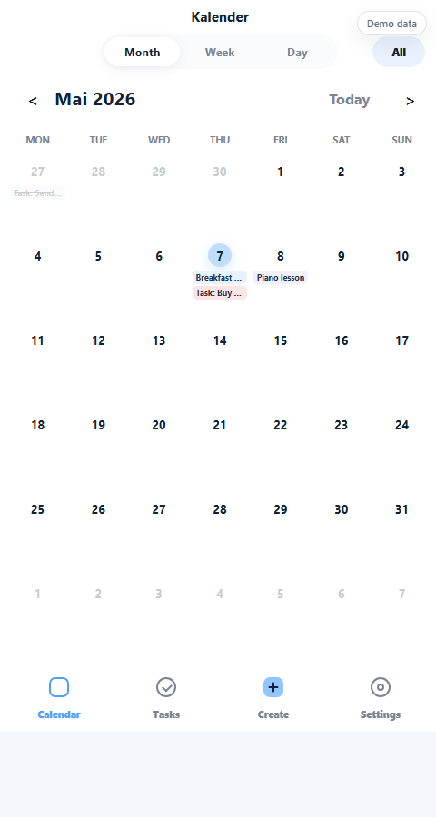
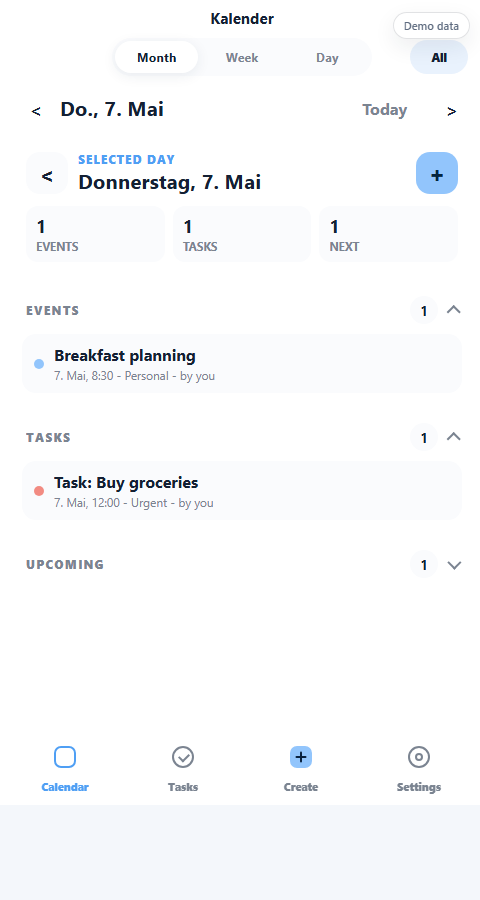
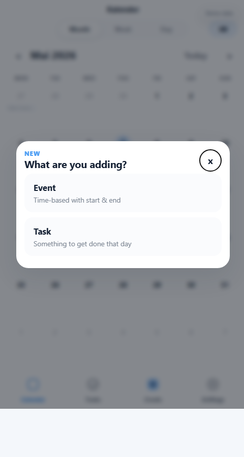
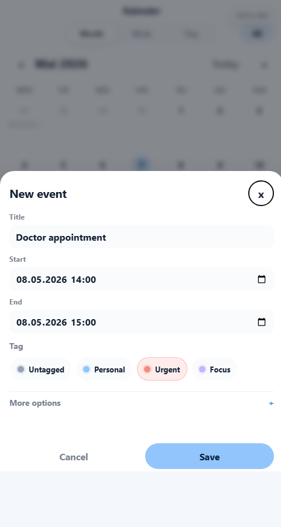
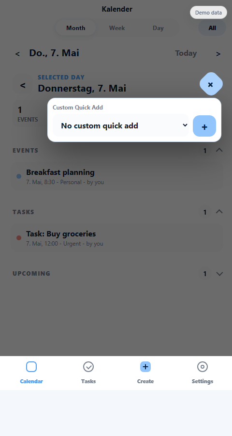
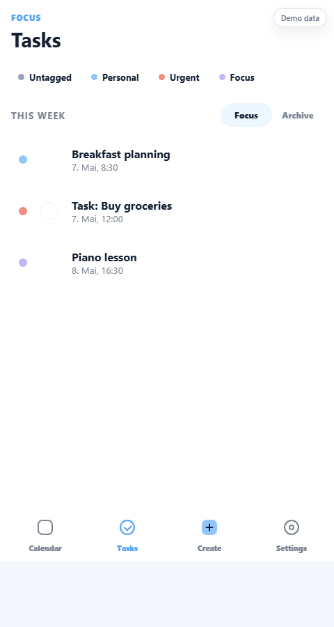
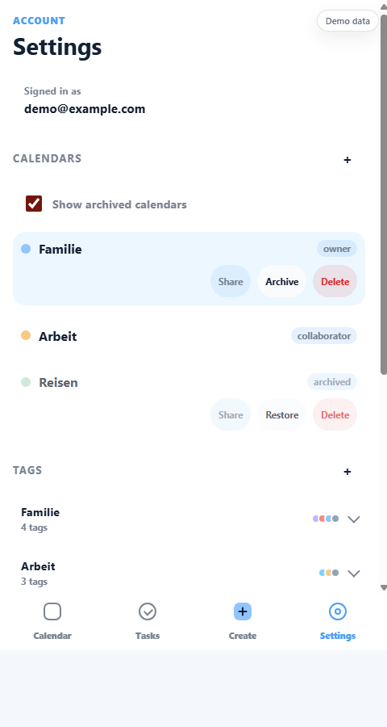
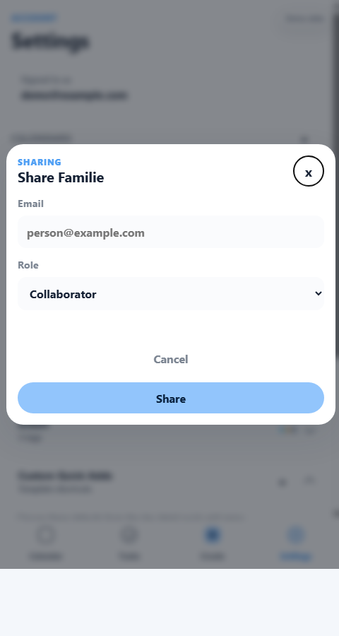
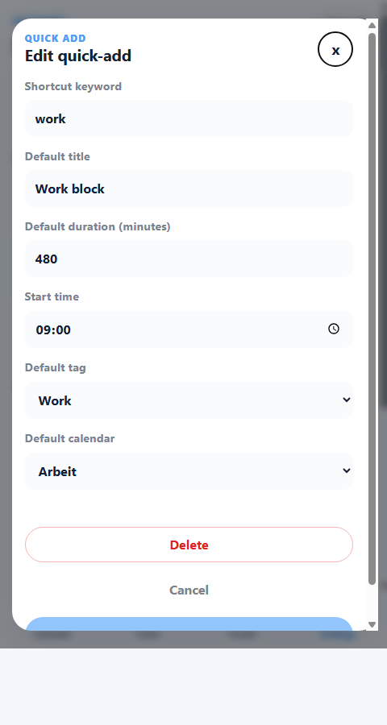

Ein kompakter Einstieg in Kalender, Aufgaben, geteilte Kalender, Tags und Quick Adds.

1 Ansicht wechseln: Month, Week, Day.
2 Filter: All, Mine oder Others.
3 Calendar ist auch der Home-Button.
Nach dem Anmelden landest du in der Kalenderansicht. Unten findest du die vier Hauptbereiche: Calendar, Tasks, Create und Settings.

1 2 31 Zurück zur Monatsansicht.
2 Plus-Menü für diesen Tag öffnen.
3 Eintrag antippen und bearbeiten.
Die Tagesdetails zeigen alles, was für einen bestimmten Tag wichtig ist: Termine, Aufgaben und die nächsten kommenden Einträge.

1 2Unten auf Create tippen. Danach wählen: Event für einen Termin mit Start und Ende, Task für eine Aufgabe an einem Tag.

1 2 3Im Formular trägst du Titel, Start, Ende und Tag ein. Unter More options kannst du Kalender, Notizen und eine Erinnerung 15 Minuten vorher festlegen.

1 2 31 Erstes Plus öffnet das Menü.
2 Optional Quick Add auswählen.
3 Zweites Plus startet das normale Anlegen.
Wenn du aus einem bestimmten Tag heraus ein Event erstellen möchtest, ist der Ablauf zweistufig:

1 2 31 Suche nach Titel oder Notiz.
2 Aufgabe abhaken.
3 Zwischen Focus und Archive wechseln.
Im Bereich Tasks findest du aktive Aufgaben und wichtige Einträge der Woche. Die Suche filtert nach Titel oder Beschreibung.
Tags sind pro Kalender getrennt. Dadurch kann ein privater Kalender eigene Farben und Namen haben, ohne den Arbeitskalender zu verändern.

1 2 3In Settings verwaltest du Kalender, Tags, Quick Adds, den Dark Mode und die Abmeldung.

1 2 3Besitzer können einen Kalender per E-Mail teilen. Wähle Collaborator, wenn die Person Einträge bearbeiten soll, oder Viewer, wenn sie nur lesen darf.

1 2 31 Shortcut, zum Beispiel work.
2 Dauer, Startzeit, Tag und Kalender.
3 Vorlage speichern.
Custom Quick Adds sind Vorlagen für wiederkehrende Einträge. Du legst ein kurzes Stichwort, eine Standarddauer, optional eine Startzeit, einen Tag und einen Kalender fest.
Praktische Beispiele: work für 09:00-17:00, gym für 18:30-19:30 oder lunch für eine kurze Mittagspause.
Nutze Tags für Bedeutung und Farbe, zum Beispiel Work, Personal oder Urgent.
Gib Bearbeitungsrechte nur an Personen, die wirklich Einträge ändern sollen.
Erledigte Aufgaben verschwinden aus dem Fokus und bleiben im Archiv nachvollziehbar.
Archivierte Kalender bleiben erhalten, stören aber nicht mehr im Alltag.
Diese Anleitung verwendet Demo-Daten. In der echten App siehst du nur Kalender und Einträge, für die dein Konto berechtigt ist.